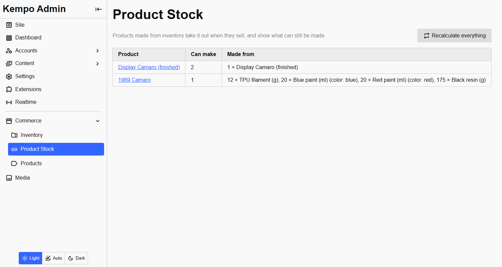
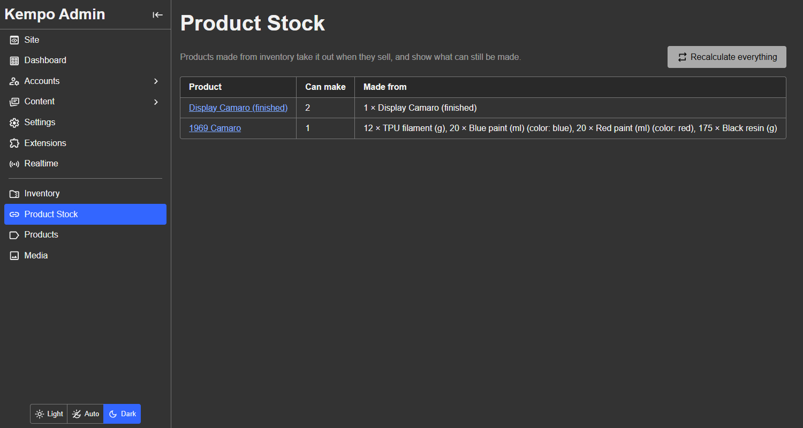

When something is wrong
When it happens
Normally nothing goes wrong, because a sale of a linked product is answered by this extension first. But if quantity was changed behind the system's back, for instance directly in the database, the materials for a sale may not be there.
The entry is refused with inventory's message, and the affected products are recalculated so they show what is really left. A problem is only recorded, with the order reference, when materials cannot be put back for something that already stands, such as the undoing of a sale.
The Product Quantity page
Open Product Quantity in the admin menu to see what is linked and what needs attention.


The Product Quantity page.Each problem can be dismissed once you have dealt with it.
Deleting an inventory item
An inventory item that products are made from cannot be deleted until it is removed from them. The deletion is refused with a message naming the products, so a product is never left depending on something that no longer exists. Deleting a product forgets what it was made from.
Repairing
Recalculate everything on the Product Quantity page is the repair tool: it works out every linked product's quantity again from the inventory as it is now. Use it after changing the database directly, or after restoring a backup.
kempo-products-inventory is open source under the MIT license. View it on GitHub, or report a problem.